The os8088 Video Encoder Guide
How to turn any video into a file that plays on a 1980s PC, and how to decide which of the encoder's many settings matter for yours.
What the encoder does
The video encoder runs on your modern computer. It reads an ordinary video file (MP4, MKV, MOV, WebM, an animated GIF: anything ffmpeg understands) and writes a .V88 file. On os8088, Video Player (VIDEO.O88) plays that file, with sound, on machines as slow as the original 4.77 MHz IBM PC.
Your modern computer can afford to be fussy, and the old PC cannot, so the encoder does all of the hard work in advance. It:
- shrinks the picture to what the target screen can show: black and white on a CGA card, four colours, sixteen, 256 on a VGA, or even a picture built out of text characters;
- works out, frame by frame, what changed, so the old machine only redraws the parts of the screen that moved;
- keeps every frame inside a budget: how many bytes a second the target's disk can read and how much of its processor the drawing may use. This is what makes a video play smoothly instead of falling behind;
- packs the sound for a Sound Blaster, or for the PC's own speaker, or leaves it out;
- puts the result on a disk image if you ask: a floppy for drive B:, or a hard disk image that boots os8088 by itself.
Most of this guide is about decisions. The window has well over a hundred settings, and almost all of them are already set sensibly by the first choice you make. This guide walks through that first choice in detail, then explains each tab: what each setting does, when it is worth changing, and why.
Before you start
What you need on your computer
- Python 3 with Tk, for the window. The installer from python.org includes Tk. On Linux, install your distribution's
python3-tkpackage. - numpy and Pillow:
python3 -m pip install numpy pillow - ffmpeg and ffprobe on your PATH, from ffmpeg.org. They read your video; nothing else needs them.
- Optional:
python3 -m pip install tkinterdnd2lets you drop a file on the window on any system. On Windows, dropping works without it. - Optional: tesseract on your PATH, only for the text-mode setting that reads words in the picture (OCR).
Starting it
Open a terminal in the os8088-encoder folder (the folder this guide is in) and run:
python3 os88vencgui.pyOn Windows, py os88vencgui.py may be the command instead. The window opens. If it says Python has no tkinter, install Tk as above.
What is in this folder
| File | What it is |
|---|---|
os88vencgui.py | The encoder window. Start here. |
os88venc.py | The same encoder on the command line (see The command line). The window runs this underneath, so both make the same file from the same settings. |
VIDEO.O88 | Video Player, the os8088 program that plays .V88 files. Every disk the encoder makes gets a copy. |
boot/ | os8088 itself (the kernel and drivers), so a hard disk image the encoder makes can boot. |
GUIDE.HTML, guide/ | This guide and its pictures. |
README.TXT | A one-page summary. |
the other .py files | Parts of the encoder. Leave them where they are. |
Your first video
The examples in this guide use one 12-second clip with three scenes: a sunset over the sea with a slow zoom in, a sunflower with a slow zoom out, and a 1980s computer desk with a sideways pan. It has a short tune for sound. Every picture of the encoded result in this guide is a real frame of that clip, drawn the way the target screen shows it.

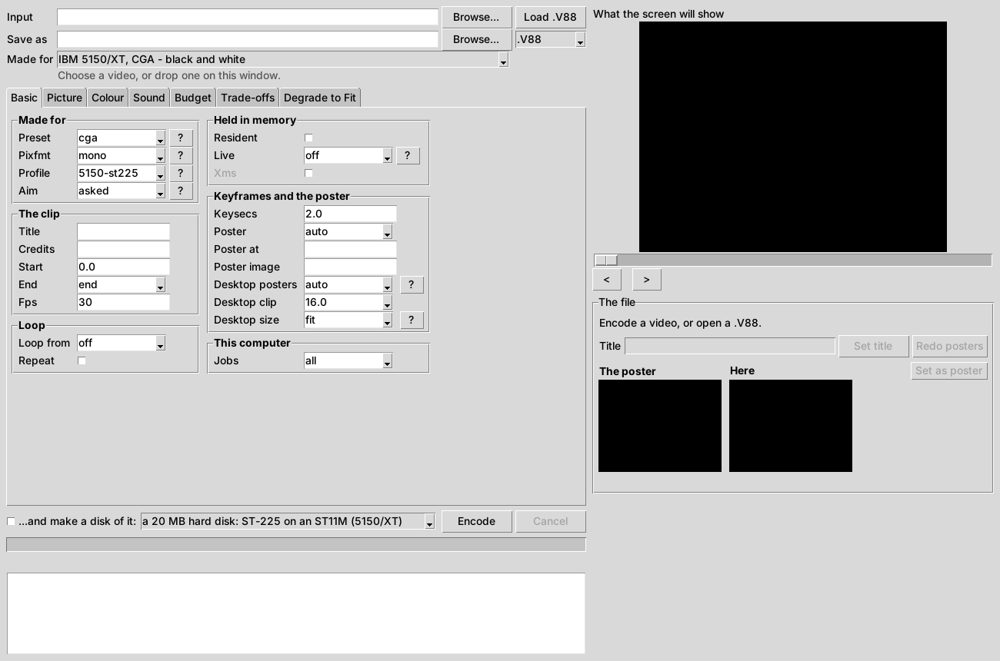
- Choose your video. Click Browse... beside Input, or drop the file onto the window. The grey line under Made for then says what ffprobe found: its size, frame rate, length and whether it has sound. Save as fills in with the same name ending in
.V88, in the same folder. - Choose what it is for. Pick the machine and screen in the Made for list. This is the one decision that matters most, and it sets dozens of other settings for you. The next section shows what each choice looks like. If you are not sure, the first entry (IBM 5150/XT, CGA - black and white) plays on the widest range of machines.
- Optionally tick "...and make a disk of it" and choose a disk from the list beside it. The list starts on a disk that suits your "Made for" choice. See Making a disk.
- Click Encode. The bar and the line under it say what the encoder is doing and roughly how long is left. A 12-second clip takes a minute or two; a whole music video can take much longer. Cancel stops it and writes nothing.
- Look at the result. When it finishes, the right side shows What the screen will show: the encoded frames, in the target's own colours and pixel shape. Drag the slider to move through the video.

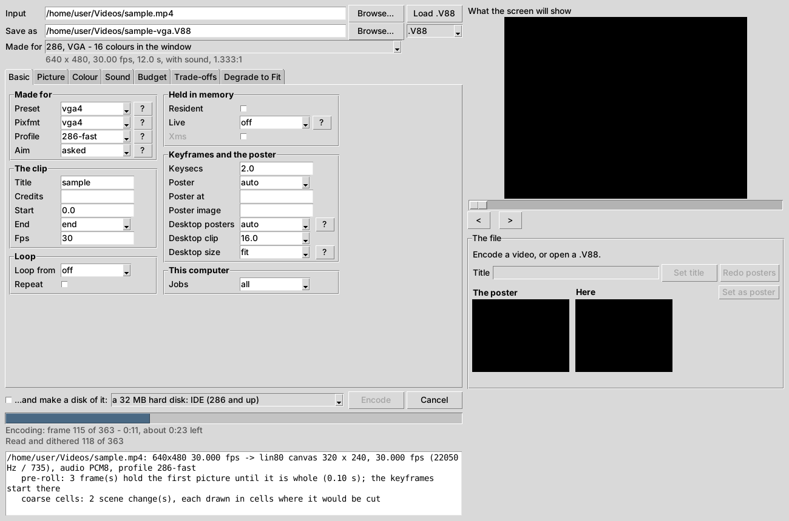

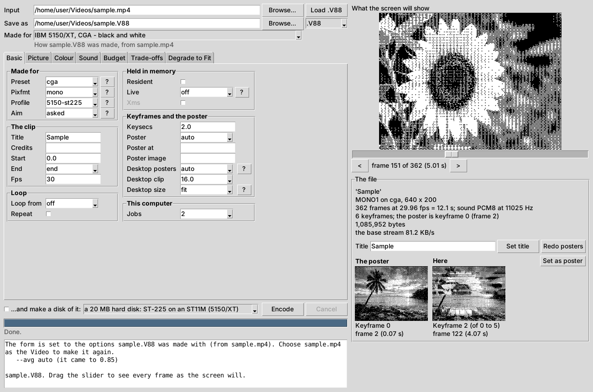
That is the whole job for most videos. The rest of this guide is for when the preview is not what you hoped for, or when your machine is not one of the defaults.
.V88 decoded frame by frame, exactly as Video Player will draw it. If something looks wrong in the preview (too dark, too busy, the wrong colours, smeared in a fast scene) it will look the same on the old machine. Fix it here, where an encode takes a minute, rather than after copying a disk across.Choosing "Made for"
Made for answers three questions at once:
- What screen? The display card (CGA, Hercules, VGA) and the mode on it: black and white in a window, four colours full screen, 256 colours, text characters and so on. This is the Preset and the Pixfmt (pixel format) on the Basic tab.
- What machine? How fast its disk is and how much processor it has. This is the Profile. A file made for a fast machine falls behind on a slow one; a file made for a slow machine plays fine on a fast one, just with a plainer picture than it could have had.
- What sound? Each profile brings a sensible sound format and rate with it.
Choosing an entry fills in every setting those three imply: the picture size, the frame rate, the colour handling, the budget and the sound. The tabs show the filled-in values. You can still change any of them afterwards.

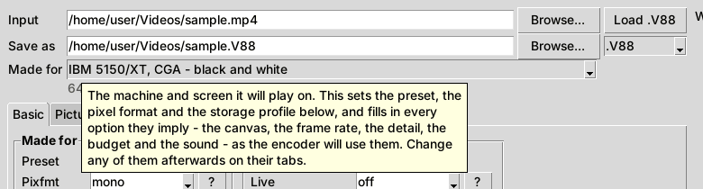
The same clip, every target
Here is the same moment of the sample clip (the desk scene, ten seconds in) made for each Made for entry, drawn as that screen shows it. Images are scaled up so you can see the pixels; on a real monitor each looks smoother.

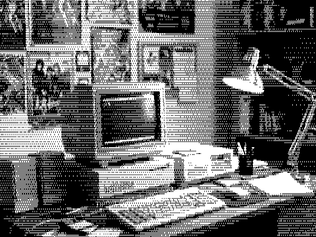

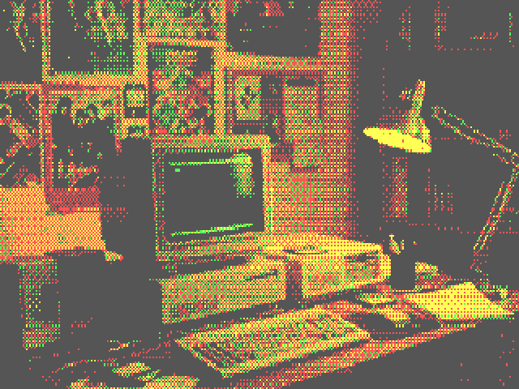

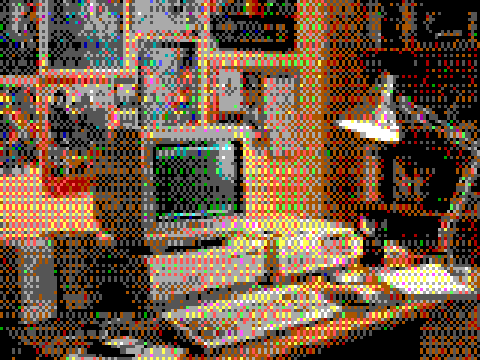

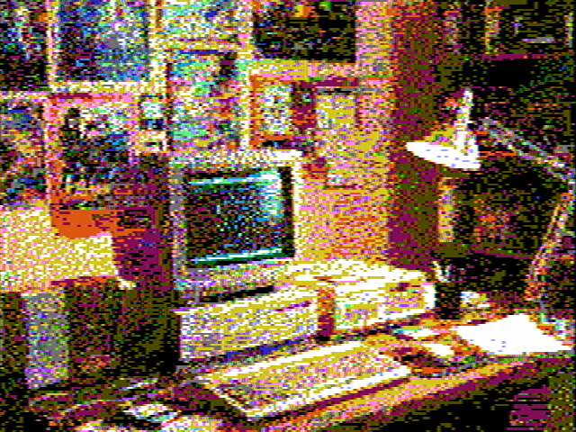

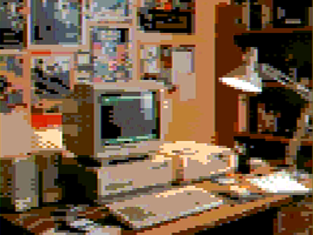

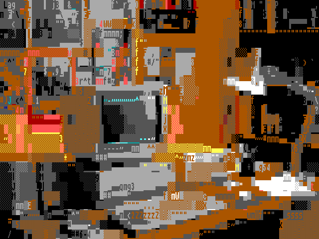

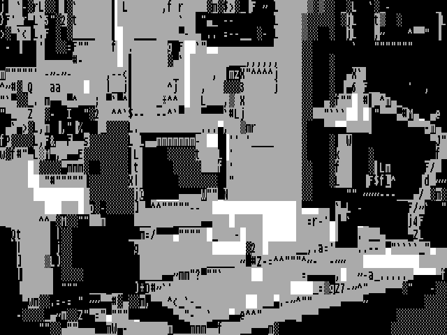

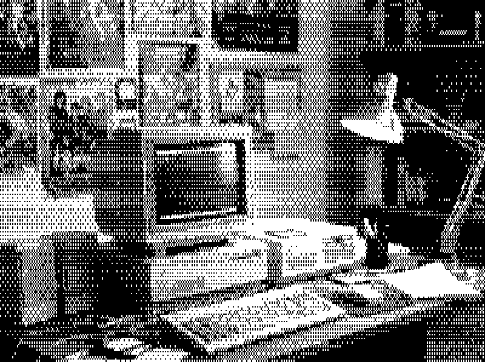

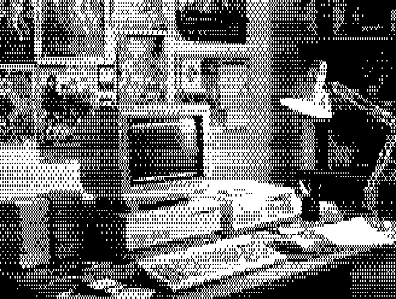

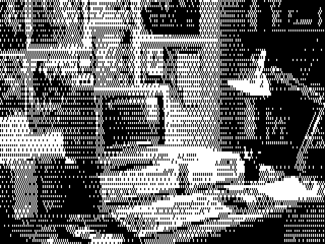

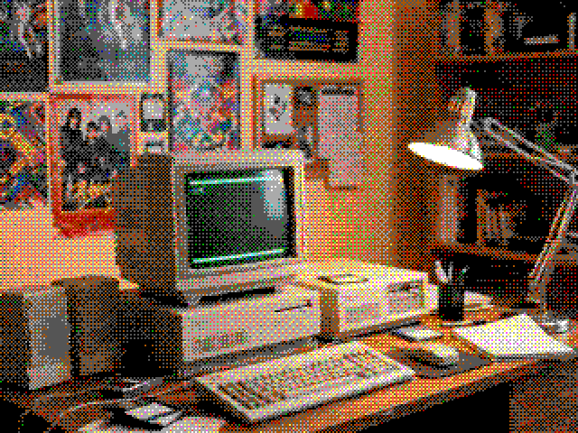

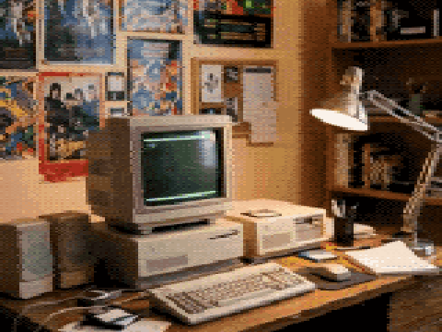

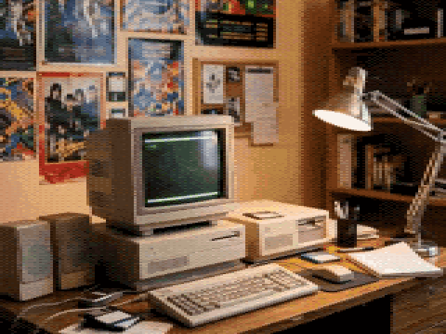


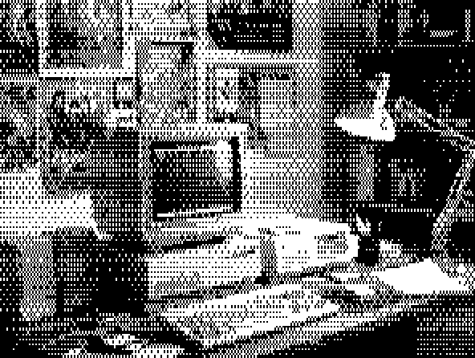

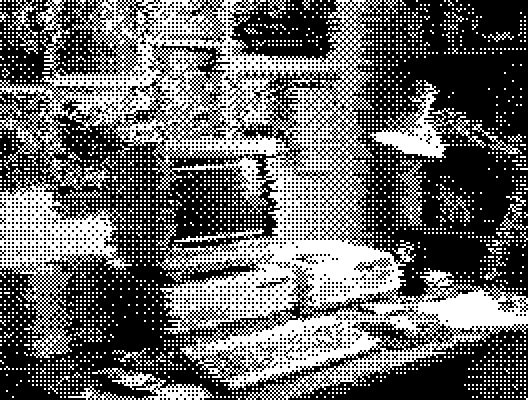
The two "486" entries look like their 286 counterparts with a bigger picture (16 colours at 400 x 300 in the window, and Mode X with more detail), because a 486 has the speed to draw more.
Which one is mine?
Work down this list and stop at the first line that fits.
| If the machine that will play it... | choose | because |
|---|---|---|
| ...should show it while you keep working (a looping logo, a short animation on the desktop) | a Live entry for its card | Live clips are loaded whole and play inside their window without taking over the machine. They must be short (or the machine needs extended memory; see Held in memory). |
| ...has no hard disk and will play from a floppy | IBM 5150/XT, a floppy - small and slow | A floppy reads about 15 KB a second, an eighth of a hard disk. Anything bigger falls apart. |
| ...has no sound card but you want sound | IBM 5150/XT, PC speaker (Hercules; its CGA twin is the cga-spk preset) | Playing sound on the speaker costs most of an 8088, so this entry plans a smaller, slower picture around it. With a sound card, choose by screen instead. |
| ...is a 286 or 486 with VGA | a 286, VGA or 486, VGA entry | These have the speed for colour. 256 colours looks best but takes the whole screen; 16 colours plays in a window. Mode X has square pixels, so circles stay round. |
| ...is a 4.77 MHz PC or XT with CGA | a CGA entry (see below) | Which one depends on the monitor and what you value. |
| ...is a PC or XT with Hercules | IBM 5150/XT, Hercules - black and white | Hercules has one, sharp, black-and-white graphics mode. |
| ...could be anything at all, including a monochrome MDA card | Any PC, Hercules and MDA too - text mode, black and white | Every PC display can show text, so this plays everywhere. |
Choosing between the CGA entries
- Black and white is the sharpest (640 pixels across), plays in a window, and works on every CGA, EGA and VGA. Choose it for anything with fine detail or for a clip that is black and white already.
- 4 colours is the classic CGA look. The encoder picks the colour set nearest your clip (green/red/brown, or cyan/magenta/white, bright or dim, with any background colour). Choose it for cartoons and bold, simple images. It suits some clips much better than others: a sunset in cyan and magenta is not a sunset.
- 16 colours at 160 x 100 gives real colour at the cost of chunky pixels. Choose it when colour matters more than detail.
- Composite colour and 512 colours only work on a composite monitor (the yellow RCA plug), or an emulator set up to show one. On an RGB monitor they look like stripes. 512 colours needs a real IBM CGA card.
- Text mode, 16 colours has a distinctive "ASCII art" look and plays on any colour card. Text video is cheap to play, so it runs at 30 frames a second easily.
The big idea: the budget
Most of the settings in this encoder exist because of one fact: an old PC cannot redraw its whole screen 30 times a second.
A black-and-white CGA screen is 16,000 bytes. Thirty of those a second is 480 KB a second. The IBM PC's hard disk (an ST-225, the default profile) reads about 119 KB a second, and the processor has to spend about half its time playing the sound and reading the disk. So the encoder cannot simply send every frame. Instead, it sends only the parts of the picture that changed since the last frame, and it keeps each frame's share inside two limits:
- The disk: bytes a second the machine can read while playing.
- The processor: how long it takes to draw the changes. There is an average to keep to, and a ceiling for any one frame.
Together these are the budget, and the Profile sets it. In a calm stretch (a slow zoom, someone talking) very little changes, the frame fits easily, and it is drawn exactly. The leftover budget is saved up for later, a little like a bank balance.
When a frame does not fit
At a scene change or a fast pan, almost every pixel changes at once. That frame cannot fit. The encoder then does the best thing it can:
- It spends the saved-up budget first.
- It lets a scene-change frame run a little late (Owe) and catches up over the next two frames.
- If it still does not fit, it cuts the frame: it sends the changes that matter most (the ones your eye would notice) and leaves the rest. Those pixels stay wrong for a moment and are fixed in the next frames, as budget comes back.
So an over-budget moment does not make the video stall or the sound skip. It makes the picture briefly rough: a new scene fills in over a few frames, or part of a fast pan lags. These four pictures are the same moment, a tenth of a second after the cut from the sunflower to the desk:


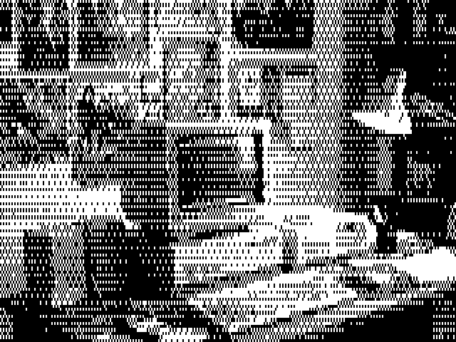

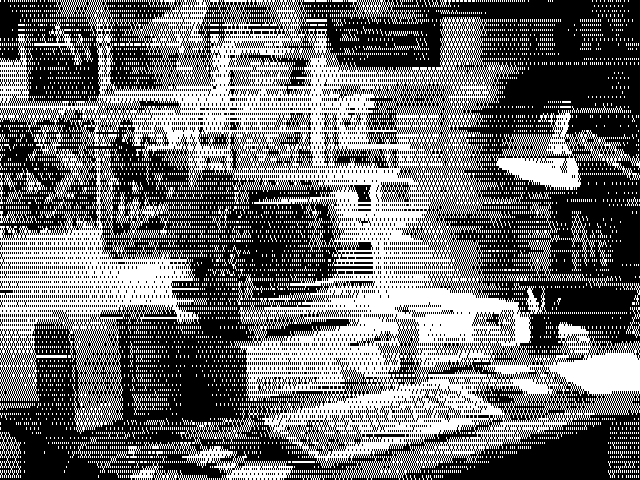

How rough the rough moments are depends on the clip. A cartoon with flat colours and slow camera work almost never goes over. A music video with a cut every second goes over at every cut. Things that make a clip easier to fit, roughly from most to least effective:
- a smaller picture (the Box on the Picture tab, or a "small" preset);
- a lower frame rate (Fps on the Basic tab): 20 frames a second leaves each frame half as much budget again as 30;
- fewer colours, or black and white;
- more stability (Stable), which stops grain and noise from costing anything;
- smaller sound (ADPCM instead of 8-bit, or a lower rate), which leaves more of the disk for the picture.
Reading the report
When an encode finishes, its messages pane ends with a report. You do not need to read it, but it says exactly how well the clip fitted. This is the report for the CGA black-and-white version of the sample, with the useful lines explained:
FILE 362 frames, 12.1 s: 1,085,952 bytes
base stream 81.2 KB/s - the picture 70.4, the sound 10.8 (PCM8 at 11025 Hz)
BASE for the 5150-st225, disk 116 KB/s at a play's share of the period
CPU (wave 0 model, audio copy in): mean 40.5%, worst 84.4%
frames: 349 exact, 13 cut to the budget (2720.6 bytes a frame left wrong);
cut by the disk 0, the CPU's average 0, the per-frame ceiling 18, ...
ring: a disk reserve of 192 KB, 8 slots - 309 KB of free memory to play it
picture: 0.19% error as seen, 0.20% of pixels wrong, ...
picture broken at 0:00.0 for 0.1 s, 0:04.1 for 0.1 s, 0:08.1 for 0.1 s| Line | What it tells you |
|---|---|
| base stream 81.2 KB/s | How fast the file has to be read on average. It must be under the profile's disk rate (here 116 KB/s), and the encoder makes sure it is. |
| CPU mean 40.5%, worst 84.4% | How busy the machine will be drawing. The average is held to about half; the worst single frame to the ceiling. |
| 349 exact, 13 cut | The important one. 13 of 362 frames went over and were drawn partly. Under a few percent is excellent. A third of the frames cut means the clip is too heavy for this machine as set up: see the list above. |
| cut by ... the per-frame ceiling 18 | Which limit did the cutting. "the disk" means the file is too big for the disk's speed (lower the frame rate or picture size, or use smaller sound). "the per-frame ceiling" means single frames were too much work to draw (usually scene changes, which is normal). |
| 309 KB of free memory to play it | How much memory the player wants for reading ahead. A machine with less still plays the file, but may pause in a heavy stretch. See Memory. |
| picture broken at 0:04.1 for 0.1 s | Where the rough moments are, as times into the clip. Here, one tenth of a second at each of the two scene changes. Drag the preview slider there to see them. |
Finding your way around the window
- Tabs. Every setting the encoder has is on one of seven tabs: Basic, Picture, Colour, Sound, Budget, Trade-offs and Degrade to Fit.
- Tooltips. Rest the pointer on any field to see what it does.
- The "?" buttons. A field that takes one of a list has a ? beside it. Click it for a window explaining every choice, with the current one in bold. Click a choice to take it.
- Greyed-out groups. Settings that cannot apply to the file you are making are greyed. Rest the pointer on the group's heading to see why, and what to change to use them.
- Words in the boxes. Some fields show a word such as auto, nearest, none or all. That word is a real choice: it means "let the encoder decide" (or "none", or "every one"). You can type a value over it.

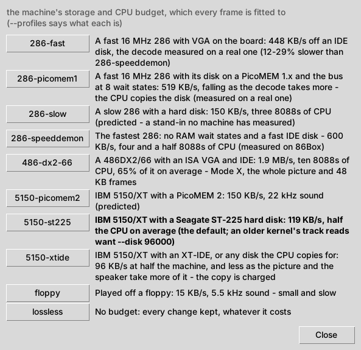

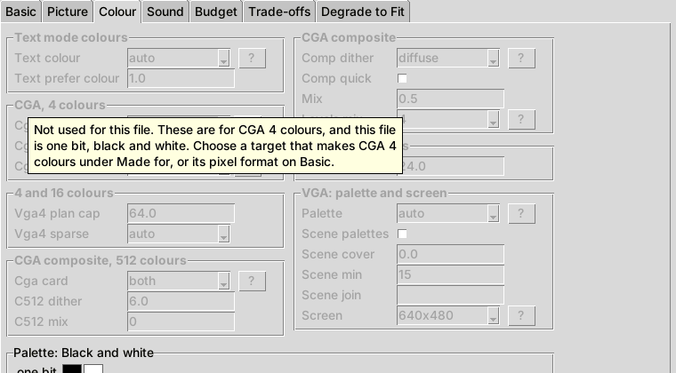
Basic tab

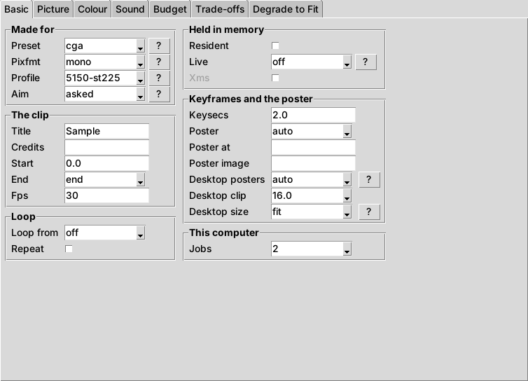
Made for
These four fields are what the Made for list sets. Change them here to mix and match: a Hercules picture with the 286 budget, for example.
Preset
The screen layout and the largest picture size, such as cga (640 x 200), herc-mid (480 x 232) or vga4-full (640 x 480). Each family has smaller and bigger versions.
Change it when you want the same look at a different size. A smaller size is the single most effective way to make a heavy clip fit: cga-small is a quarter of the pixels of cga and needs about a quarter of the budget. A bigger size (herc-full, vga4-full) is for a fast machine or a calm clip.
Pixfmt (pixel format)
How a pixel is stored: mono (black and white), cga4, c160, cgacomp, c512, vga4, vga8 or text. Each one only works on some layouts, and the list only offers the ones that fit the preset.
Change it when you want black and white on a colour card. For example, the vga4 preset with Pixfmt mono gives a sharp black-and-white picture on a VGA that is lighter to play than sixteen colours.
Profile
The machine: its disk speed and its processor. This sets the whole budget, and with it the default sound.
| Profile | Choose it for |
|---|---|
5150-st225 | An IBM PC or XT with an MFM hard disk on a controller like the ST11M (the default). Also the right choice for most XT-class machines with an MFM or RLL disk. |
5150-xtide | A PC or XT with an XT-IDE card, CompactFlash adapter, or any disk where the processor copies the data. Those disks cost processor time the picture would have had, so this plans for less. |
5150-picomem2 | A PC or XT with a PicoMEM 2 card. |
floppy | Any machine playing from a floppy disk. |
286-slow | A 6 to 8 MHz 286 (an IBM AT, for example). |
286-fast | A 12 to 16 MHz 286 with VGA and an IDE disk. The safe choice for a "286 with VGA". |
286-picomem1 | A fast 286 with its disk on a PicoMEM 1. |
286-speeddemon | The fastest kind of 286 with a fast IDE disk. Files made for it may be too heavy for an ordinary 286. |
486-dx2-66 | A 486DX2/66 or similar. |
lossless | No budget. For looking at a picture, or for a fast emulator; not for a real old machine. |
Why it matters: the profile is the difference between a file that plays smoothly and one that falls behind. If your machine is between two profiles, choose the slower one.
Aim
What to do with budget the clip does not use. asked (the default) makes exactly what the settings say.
qualitytries richer versions of your settings (the next bigger preset in the family, then 22 kHz sound) with short trial encodes, and keeps each one only if the picture stays nearly as good. The report says what it tried. Use it when you do not know how big a picture the machine can manage for this clip and want the encoder to find out. It takes several times longer.sizeleaves out changes that are not worth their bytes, even when the budget could take them: the smallest file for nearly the same look. Use it to fit more videos on a disk. The Worth setting on Trade-offs says how strict it is.
The clip
Title and Credits
The name Video Player shows, and a line for its information card. The title starts as the video's file name. Up to 47 characters; the player's panel shows the first 35.
Start and End
Where in the source to begin and stop, in seconds. Use them to trim a long video, and to make quick test encodes of just the hard part.
Fps (frames a second)
Starts as the source's own rate, up to 30 (25 for the 256-colour entries). The encoder adjusts it very slightly so the picture and sound stay in step.
Lower it when the report shows many cut frames and the clip is not about smooth motion. 20 or 15 frames a second gives each frame more budget, so each one is drawn more completely. Cartoons were often drawn at 12 to 15 frames a second anyway. Keep it high for fast action, scrolling, or anything where smoothness is the point; reduce the picture size instead.
Loop
Loop from and Repeat
Repeat makes the player start with its Repeat button on, so the video plays round and round. Loop from (seconds) makes the loop seamless: the end joins straight back to that point with no pause or redraw. 0 loops the whole clip.
Use them for a logo, a background animation or a music loop. Leave Loop from at off for ordinary videos. It cannot be used with ADPCM sound.
Held in memory
Normally Video Player reads the file from disk as it plays. These change that.
Resident
The whole file is read into memory first, then played with no disk use at all. The disk budget no longer applies.
Use it for a short clip on a slow disk (a few seconds from a floppy, for example), or one that must play with no disk noise. The clip has to fit in the machine's free memory.
Live
A Live clip plays on the desktop, inside its window, while you carry on using other programs. It is small, black and white (or 16 colours on a VGA), and read whole into memory. Choose the desktop it is for: cga, herc or vga.
Use it for something decorative: a spinning logo, a clock face, a short loop. The "Live" entries in Made for set this for you.
Xms
With Live: a Live clip of any length, for a 286 or better with extended (XMS) memory to hold it. On a machine without enough, it plays in the window the ordinary way.
Keyframes and the poster
Keysecs
Seconds between keyframes (default 2). A keyframe is a whole picture stored in the file: the places a play can start from, and what the slider in Video Player jumps between.
Lower it (1 second) if you want finer seeking. Raise it (5 or 10) to save space on a long video; seeking becomes coarser. Keyframes are not read during a normal play, so they cost disk space, not smoothness.
Poster, Poster at, Poster image
The poster is the still picture Video Player shows before you press Play. By default it is the first keyframe that is not blank. Poster picks a keyframe by number, Poster at picks the keyframe nearest a time, and Poster image uses a picture file of your own (or @12.5 for the video's own frame at 12.5 seconds, even between keyframes).
Use them when the opening frame is a black screen or a studio logo. You can also change the poster after encoding without encoding again; see Changing a finished file.
Desktop posters, Desktop clip, Desktop size
Video Player's window shows a small preview picture. For formats the desktop cannot show directly (256 colours, CGA's colour modes), the encoder stores a ready-made preview of each keyframe. auto does this where it helps; colour, mono or both force it; off stores none, which makes the file slightly smaller. Desktop size half or quarter keeps the preview small, and Play then goes full screen.
Leave these alone unless the preview picture in Video Player looks poor or the file must be as small as possible.
This computer
Jobs
How many processor cores the encoder uses on your computer. all by default. Set fewer if you want your computer to stay responsive while it encodes. The file comes out the same either way.
Picture tab

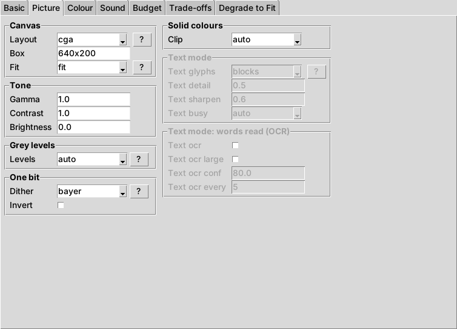
Canvas
Layout
The screen memory the file is laid out for. The preset sets it; you will rarely need to change it.
Box
The largest the picture may be, as width x height (for example 480x232). The picture is fitted inside it.
Change it when you want a size between the presets, or a letterbox shape. Smaller is always cheaper to play.
Fit
What to do when the video's shape differs from the box's shape. These are a 4:3 clip in Hercules' 400 x 200 box, which on a Hercules screen is a wider shape than 4:3:

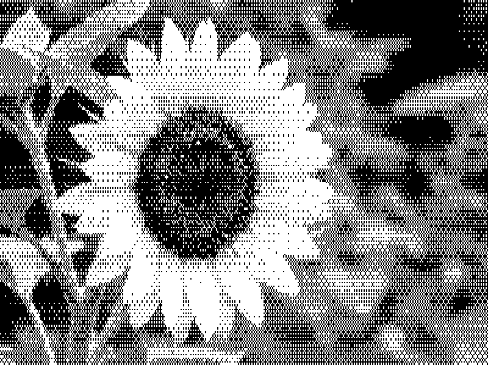

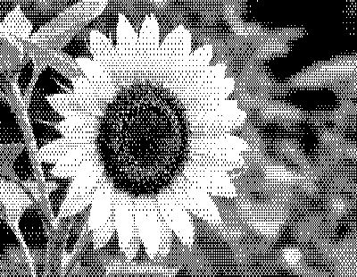

Tone
Gamma, Contrast, Brightness
Adjust the picture before it is reduced. Gamma above 1 lightens the middle tones without washing out the blacks and whites; below 1 darkens them. Contrast stretches or squeezes everything around the middle. Brightness (from -1 to 1) moves everything up or down.

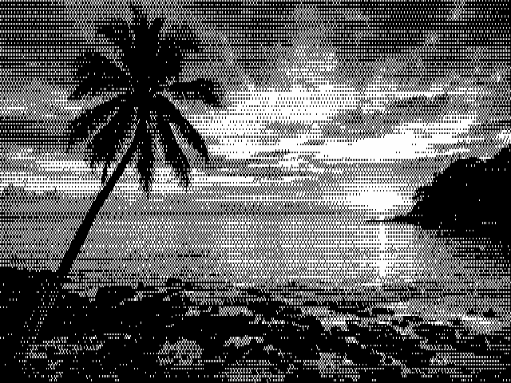


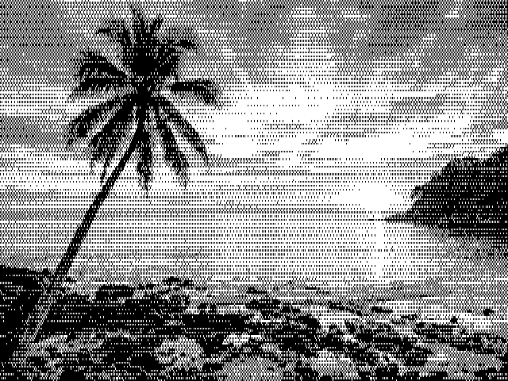
Use Gamma first when a dark video turns to black blobs (raise it) or a bright one looks washed out (lower it). Black and white and four colours have very few tones to spare, so a small gamma change makes a big difference there. A VGA 256-colour picture rarely needs it.
Grey levels
Levels
auto stretches the range of greys the clip actually uses to the full black-to-white, ignoring the darkest and lightest 1%. Many videos never quite reach black or white, and on a black-and-white screen that range is precious.
Set it to none for a clip that is meant to be dark or misty (a night scene, a fade), where stretching would make it look harsh or bring up noise.
One bit
Dither
A black-and-white screen makes grey by mixing black and white dots. How the dots are arranged is the dither:

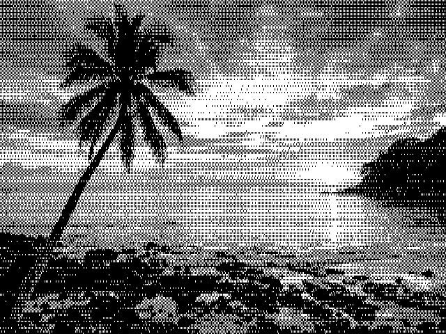


Choose bluenoise for photographic video where the regular pattern bothers you and there is budget to spare. Choose threshold for high-contrast animation; it is the smallest and sharpest of the three for that kind of picture.
Invert
Swaps black and white. Useful for a clip of white lines on black, or for a stylised look.
Solid colours
Clip
How close a colour must be to one the screen has to be drawn as that colour solid, with no dots. Default 16 (out of 255). Without it, an MP4's "black" (which is often 3 or 4 rather than 0) would light a faint, even grid of dots across every dark area.
Raise it (24 or 32) if dark backgrounds or white skies show a fine pattern of stray dots. Lower it (8, or 0) if shadow detail is disappearing into solid black. On CGA's colours, a high Clip to stop coloured dots also stops greys being dithered; use Colour mix and Colour clip instead.
Text mode
For the two text-mode entries. The picture is drawn with the 256 characters of the PC's text font, each cell a character with a foreground and background colour.
Text glyphs
Which characters may be used:


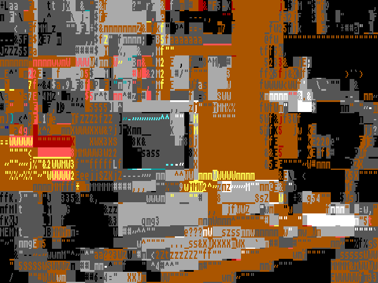
The other sets: shades (letters and shades, no half blocks), dots and dots-plus (blocks for shapes, punctuation for edges), and blocks-only and blocks-only-shade (no letters at all, so the picture never seems to "spell" things).
Choose by look. blocks is the most faithful; ascii and dots are the art styles people recognise; blocks-only is the calmest.
Text detail, Text sharpen, Text busy
Detail (0 to 1) balances getting edges right against getting tones right. Sharpen sharpens the picture before characters are chosen. Busy is how much better a letter must be before it is used instead of a plain block or shade: higher means fewer letters and a calmer picture.
Raise Busy if the picture looks like a crawling page of random letters. Raise Sharpen for a soft source.
Text mode: words read (OCR)
With tesseract installed, Text ocr reads words in the picture (a score, a subtitle, a caption) and draws them as real characters, and Text ocr large draws big lettering (a title) as crisp solid blocks. Text ocr conf is how sure it must be; Text ocr every reads one frame in that many to save time.
Use it for game footage with a score, or anything with on-screen text you want to stay readable. It makes the encode much slower.
Colour tab
The Colour tab has a group for each colour format, and only the one for your file is active. At the bottom, the Palette panel shows the colours your choices will give, as swatches. Rest the pointer on a swatch to see its number and colour.

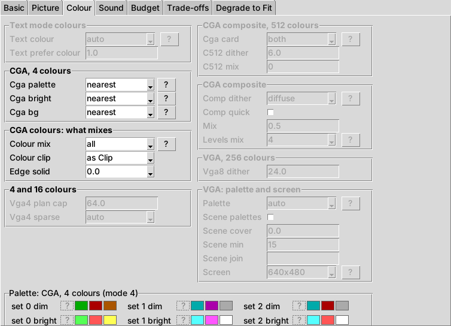

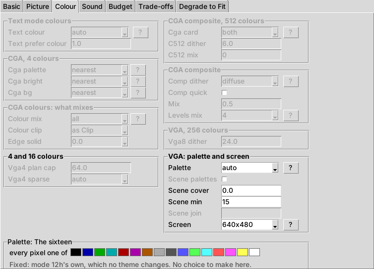
CGA, 4 colours
Cga palette, Cga bright, Cga bg
CGA's four-colour mode has three fixed sets of three colours (green/red/brown, cyan/magenta/white, and cyan/red/white), each dim or bright, plus one background colour that can be any of the sixteen. Left on nearest, the encoder looks at the clip and picks the combination closest to it.


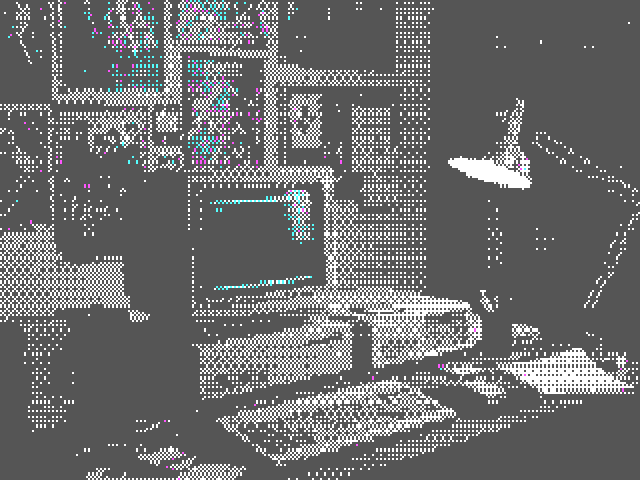
Set them by hand when you want a particular look regardless of the clip (the cyan and magenta of 1980s games, say), or when several clips should match. Choosing the background is often the biggest improvement: a dark blue background can suit a night scene far better than black.
CGA colours: what mixes
Colour mix, Colour clip, Edge solid
For CGA 4 colours and CGA 16 colours. A colour the screen does not have is made by mixing ones it does have, dot by dot. With Colour mix on all (the default) any colours may mix, and on the cyan, red and white set that goes wrong: cyan and red dots side by side average to grey, so greys come out as speckles of cyan and red, and a blue picks up red dots. On a monitor that reads as coloured dots, not as a new colour.
hue stops it. Greys are mixed from black, white and the greys between, never from colours, and a colour mixes only with colours of its own hue and with one grey: black to darken it, white to lighten it.
Colour clip is Clip for the colours alone, so the two can differ: how close a pixel must be to one of the set's colours to be drawn as that colour, solid. Left on as Clip it is the same number. 255 never dithers a colour at all: flat colours stay flat and only greys are dithered.
Edge solid draws a pixel where the picture changes sharply (an edge) as its nearest colour, never a dot. The soft edge of a letter or a cartoon outline is a blend one or two pixels wide; dithered, it becomes a fringe of stray dots around every shape. 48 suits cartoons and titles. Leave it at 0 for camera footage, where it would flatten fine texture into blotches.

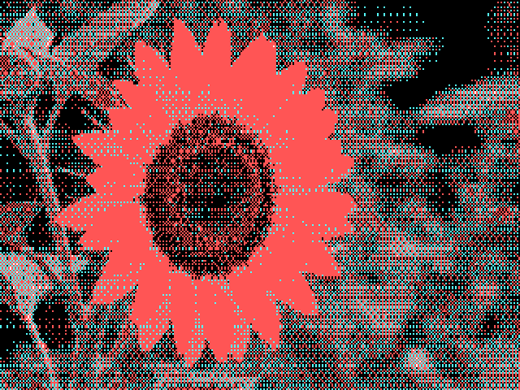

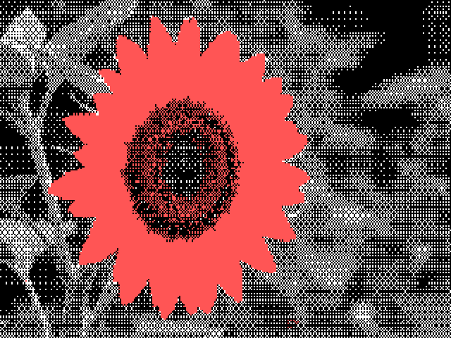

Use hue whenever greys or colours show dots of a colour that is not in the picture. Add Colour clip 255 and Edge solid 48 for cartoons, anime and titles: flat colour areas and lettering, the kind of picture CGA's four colours suit best. For camera footage, hue alone is usually the better choice.
4 and 16 colours
Vga4 plan cap, Vga4 sparse
Fine controls for a 16-colour picture that uses the clip's own colours. Plan cap stops a mix from using a colour very far from the real one (which shows as stray bright dots on dull greys). Sparse removes lone dots that a colour contributes only rarely.
Leave them alone unless you see scattered bright dots in grey areas; then lower Plan cap.
CGA composite (colour and 512 colours)
Comp dither, Comp quick, Mix, Levels mix
For the composite-colour entry. Comp dither diffuse (default) gives the most accurate colour; pattern is steadier from frame to frame. Comp quick makes the encode about five times faster at a small cost in accuracy. Mix and Levels mix control how the pattern dither blends colours.
Tick Comp quick while you experiment, and untick it for the final encode. Choose pattern if colours shimmer on a still picture.
Cga card, C512 dither, C512 mix
For the 512-colour entry. IBM's original CGA (1981) and its 1985 revision show composite colours differently. Cga card both (default) picks colours that look right on either; choose old or new if you know which card will play it, for slightly better colour on that card.
VGA
Vga8 dither
For 256 colours: how strongly to dither between palette colours. Lower is cleaner and smaller; higher has smoother gradients. 0 turns dithering off.
Palette
Which colours a 256- or 16-colour file uses. auto uses the clip's own 256 (for 256 colours) or the VGA's standard sixteen (for 16).
grey2togrey64: shades of grey only. A black-and-white film in 16 greys looks far better than in black and white dots.clip2toclip128: the clip's own N most-used colours.colour8,colour12,colour16: the clip's own colours, chosen to keep small bright things (a red light, a blue sky) in their own colour instead of spending every colour on the greys that fill most of the picture.

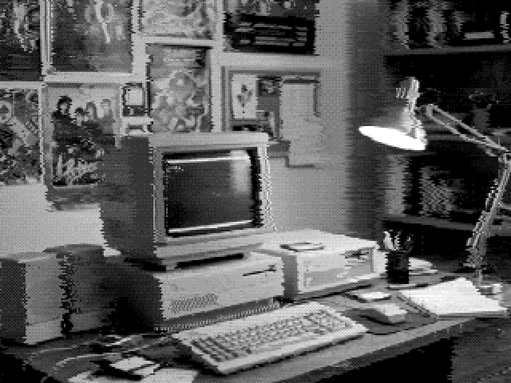
Choose colour16 (with Scene palettes) for a 16-colour clip whose colours look muddy in the standard sixteen. Choose a grey ramp for a black-and-white film. Fewer colours also means fewer changes, so a smaller, lighter file.
Scene palettes, Scene cover, Scene min, Scene join
With 16 colours and a colourN palette: Scene palettes gives each scene its own set of colours, switched at the scene change. A sunset gets oranges and a forest gets greens. Scene min is the fewest frames a set must last (so a fast camera does not flash between sets); Scene cover is how much of the picture must change to count as a new scene. Scene join lists times (in seconds) where two scenes should share one set: use it where the report says a scene change showed the old picture in the new colours for a moment.
Screen
For 16 colours: 640x480 (default) plays in a window on the VGA desktop. The other sizes play full screen and have room for a second page, which makes page flipping possible.
Text mode colours
Text colour, Text prefer colour
Text colour colour uses sixteen foreground and sixteen background colours; mono uses only grey, white and reverse, which every display card shows, including Hercules and MDA. Text prefer colour keeps a cell's colour over its exact brightness, so a pale blue sky is drawn in blue and white rather than grey. 0 turns it off; 2 is stronger.
Sound tab

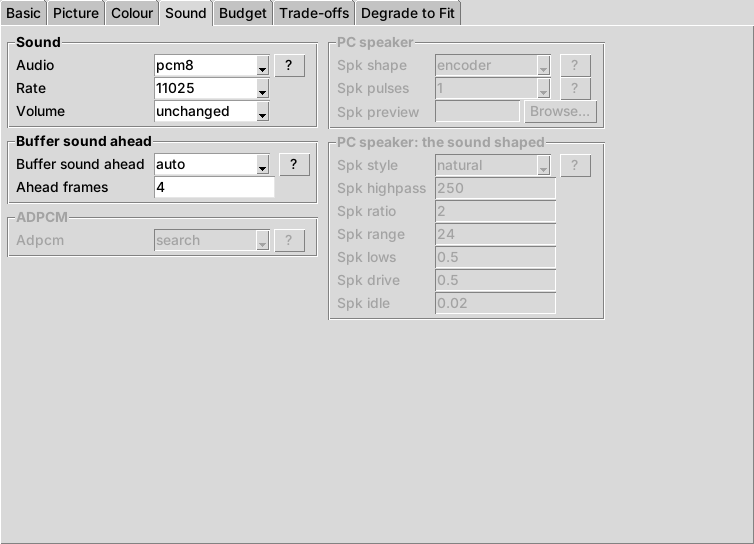
Audio
| Choice | What it is | Choose it when |
|---|---|---|
pcm8 | 8-bit sound for a Sound Blaster. | The machine has a Sound Blaster or compatible. The usual choice. |
adpcm4 | Sound Blaster's compressed 4-bit format: half the bytes, a little noisier. | The disk is the bottleneck (the report says frames were "cut by the disk") and you would rather have a better picture than better sound. Some clone cards cannot play it; the player then starts muted. |
speaker | The PC's own speaker, for a machine with no sound card. | There is no card. It costs about half an 8088's time at 5.5 kHz and about 78% at 8 kHz, so the picture must be planned smaller. The PC speaker entry in Made for does that for you. |
none | Silent. | The clip has no sound worth keeping. All the disk and processor time goes to the picture. |
Rate
Samples a second. The list offers 22050, 11025, 8000 and 5512; you can type another. The profile sets the default: 11025 for an XT, 22050 for a 286 or faster, 5512 for a floppy.
Lower it to free disk for the picture: 5512 halves the sound's share. Speech survives 5512 well; music sounds muffled. Raise it to 22050 on a fast machine for music.
Volume
Makes the sound louder or softer: 1.5 is half as loud again, 3dB or 6dB louder in decibels, 0.5 half as loud. 8-bit sound is noisy at low levels, so a quiet source benefits from a boost. Too much and it distorts.
Buffer sound ahead
Buffer sound ahead, Ahead frames
Stores the sound a few frames ahead of its picture, so the player has it before the disk gets to the picture. In a heavy stretch the sound keeps playing smoothly. It costs a little disk space at every keyframe and nothing while playing.
Leave it on auto; the encoder turns it on where the clip needs it. Set it on if you hear the sound pause in busy moments on the real machine.
ADPCM
Adpcm
search (default) finds the best-sounding ADPCM stream and is noticeably cleaner; greedy is much faster to encode. Use greedy for test encodes.
PC speaker
The PC speaker can only click on and off, so the encoder plays sound on it by sending very fast pulses. These settings make speech and music audible over the high-pitched whine those pulses make.
Spk shape
encoder (default) prepares the sound for the speaker here: it cuts what the tiny speaker cannot play, evens out loud and quiet passages, and drives it loud. none leaves it as it is, for comparison; most of it then disappears under the whine on a real PC.
Spk pulses
2 sends two pulses a sample, which moves the whine to twice the pitch, where it is much less audible. It needs almost all of a 4.77 MHz 8088, so use it only for a 286 or faster.
Spk preview
Writes a .WAV of exactly what the speaker will play, whine and all, so you can listen on your computer before copying anything. Use it while choosing the settings below.
Spk style and the fine controls
Spk style natural (default) keeps more of the music's rise and fall; lifted raises quiet passages more, so a soft introduction is heard. The fine controls (highpass, ratio, range, lows, drive, idle) adjust the same processing in detail. Spk drive is overall loudness; Spk highpass removes bass the speaker cannot play anyway.
Try lifted for speech or a quiet song. Leave the fine controls alone unless you are comparing previews.
.WAV. The encoder then saves only the sound, shaped for the PC speaker, for os8088's Audio Player to play.Budget tab

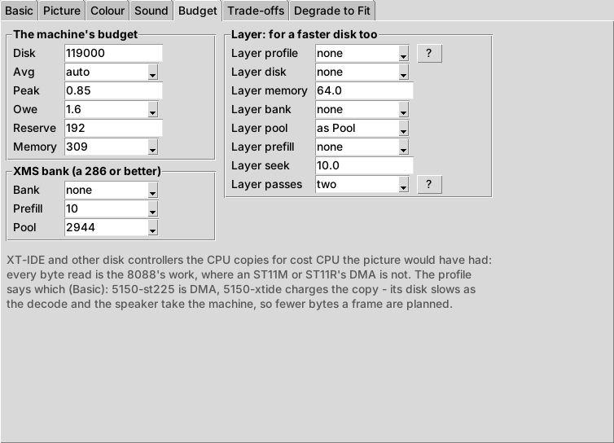
The profile fills in this tab. Change it when you know your machine differs from the profile, or to give a particular file more or less room.
The machine's budget
Disk
The disk's reading speed during a play, in bytes a second.
Change it when you have measured your own machine, or it has a disk the profile does not describe. For example, an older os8088 kernel reads an ST-225 more slowly (use 96000), and an ST11R controller in a fast 286 reads about 250000.
Avg and Peak
How much of the processor drawing may use: Avg on average, Peak in any one frame. auto uses the profile's own value. 0.85 means 85% of a frame's time.
Lower them if the video falls behind its sound on your machine (a slower clone, a busier configuration). Raising them is rarely wise.
Owe
How many frames' time one scene-change frame may borrow (1.6 by default), paid back over the two frames after. The picture waits a fraction of a second at a cut instead of smearing. 0 turns it off, holding every frame strictly to Peak.
Reserve and Memory
Video Player reads ahead into memory, and the encoder lets a heavy stretch spend what was read ahead in a calm one. Memory is how much free memory (in KB) the player will have for that, 309 by default; Reserve says the same thing as how much of the stream may be banked.
Lower Memory for a machine with little free memory (a 256 KB machine, or one with many drivers loaded). If the player has less than the file planned for, it says Low memory and may pause in a heavy stretch. Raise it (373, 437) for a machine with plenty free, and heavy stretches will be drawn better.
XMS bank (a 286 or better)
Bank, Prefill, Pool
On a 286 or faster with extended memory, the player can read the stream much further ahead into XMS, so a long heavy stretch can be drawn in full. Bank is how much (in KB), or auto to use as much of Pool (the machine's free XMS) as the clip needs. Prefill is how many seconds are read before the first frame (the player says Buffering meanwhile), or all.
Use it for a 286 or 486 file with a lot of fast action, on a machine with a few MB of extended memory. A machine without enough XMS still plays the file, possibly with pauses in heavy stretches. It cannot be used with PC speaker sound.
Layer: for a faster disk too
Layer profile and the layer settings
A layer is a second stream in the same file, made for a faster machine. Every machine plays the base picture made for Profile; a machine fast enough to read the layer too gets a better picture. Pick the faster machine as Layer profile (for example base 5150-st225, layer 286-fast).
Use it when one file has to play on an XT and also look good on a 286. Otherwise leave it at none: a layer makes the file bigger and the encode slower. Layer passes two (default) takes about half as long again to encode and gives the better result.
5150-xtide is a separate profile, and why a file made for an ST-225 machine can fall behind on an otherwise identical XT-IDE machine.Trade-offs tab

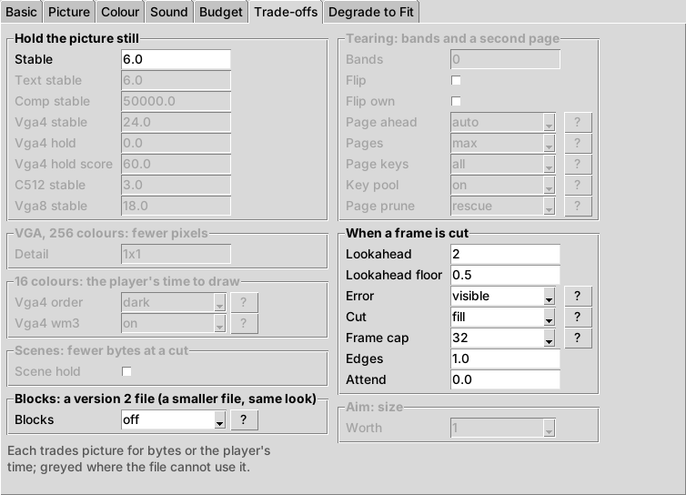
Hold the picture still
Stable (and the per-format versions)
Video, especially compressed video, has grain and noise: a wall that should be still flickers slightly from frame to frame. On a dithered screen that makes dots blink on and off, and every blink costs bytes and drawing time. Stable keeps a pixel as it was unless the source has really changed by more than this amount. There is one setting per format: Stable for black and white, Text stable, Comp stable, Vga4 stable, Vga4 hold and Vga4 hold score (16, 4 and CGA 16 colours), C512 stable and Vga8 stable; only your format's is active.
Raise it for a noisy or grainy source (old film, low-light phone video, a heavily compressed download). The picture becomes calmer, the file smaller, and fewer frames are cut. Too high and slow changes stop showing up: a fade lags, or a slowly moving shadow leaves a trail. Lower it (or 0) for clean animation where every change is real.
VGA, 256 colours: fewer pixels
Detail
Draws the picture at half (2x1) or a quarter (4x1) of the width, or half the height (1x2), and shows it at full size. The 286 VGA entries use 2x1 by default; the 486 ones 1x1.
Use 1x1 on a fast machine for full detail. Use 2x1 or 4x1 when a 256-colour clip has too many cut frames: it halves the work with surprisingly little visible loss, since VGA's 256-colour pixels are already wide.
16 colours: the player's time to draw
Vga4 order, Vga4 wm3
Vga4 order planes rearranges the colours so changes cost less to draw (a smaller, lighter file, at the cost of a slower encode). Vga4 wm3 on stops a wrong colour from flashing for an instant while a pixel is redrawn, at some cost in drawing time.
Try planes on a heavy 16-colour clip. Turn wm3 off only if the machine is short of time and you do not mind an occasional flicker of colour.
Scenes: fewer bytes at a cut
Scene hold
With scene palettes: starts each new scene from the old scene's screen, so the cut needs fewer bytes. The old scene's pattern fades out over the first few frames.
Blocks: a smaller file, same look
Blocks
on lets a frame that does not fit draw small blocks (a filled square, a two-colour pattern, or a tile the stream has seen before) that each stand for many pixels of change; the following frames sharpen them. The same disk budget gives a better picture, at a little more drawing time.
Turn it on for 16-colour, 256-colour and black-and-white files that cut a lot of frames. It only plays on the Video Player from this release onwards, and cannot be used with Live, resident, bands, a tear, or a looped black-and-white file.
Tearing: bands and a second page
When a frame takes longer to draw than one screen refresh, the screen can show half of the old frame and half of the new one: a tear. These settings deal with that on the screens that can.
Bands
Mode X and 16 colours draw a picture in four colour planes, so a half-drawn frame shows as stripes of wrong colour across the whole picture. Bands (for example 4 or 8) draws the frame one horizontal band at a time, so a half-drawn frame shows one clean tear line instead. It costs a few bytes and a little drawing time per band.
Flip, Flip own
With two pages of video memory (Mode X, or 16 colours on a full-screen Screen), the player draws the next frame on the hidden page and then shows it all at once. No tearing at all, but about twice the drawing work. Flip own stores each frame against the page it will be drawn on, which saves drawing time for more bytes. With both on, Flip build can bring big scene changes in whole.
Use Flip on a fast machine (a 486, a fast 286) where tearing bothers you.
Page ahead, Pages, Page keys, Key pool, Page prune
Page ahead uses the spare page differently: it builds an upcoming scene change on the hidden page during the calm frames before it, then shows the whole new scene at once with a single flip. The cut is clean instead of filling in over several frames. auto (default) tries it on Mode X and full-screen 16 colours, and keeps it only if the result is better everywhere; it doubles the encode time on those files. Pages uses more hidden pages so several cuts close together can all be built ahead. The remaining three settings tune how those pages are stored; leave them at their defaults.
Set Page ahead on for a Hercules file with frequent hard cuts (it then plays only on a Hercules with no colour card beside it). Set it off to halve the encode time while experimenting.
When a frame is cut
These decide which changes a too-heavy frame keeps. The defaults are good; they are here for clips that misbehave.
Lookahead, Lookahead floor
When ranking changes, the encoder also looks this many frames ahead (2 by default), and does not spend budget on a pixel that is about to change again anyway. Lookahead floor makes sure something bright that is about to move is still drawn now.
Error
visible (default) judges a wrong pixel by how wrong it looks to the eye; bits counts wrong pixels plainly. Leave it on visible.
Cut
Which changes a cut frame keeps. fill (default): the most important first, then everything else that fits. rank: the most important only. tear: whole rows from the top down, carrying on next frame from where it stopped, like a frame drawn without waiting for the screen refresh.
Try tear for fast horizontal pans, where scattered half-updated rows look worse than one clean tear line moving down the picture.
Frame cap
The most one frame may hold: 32 KB (default; every player), 48 or 63.5. Bigger lets a fast pan be cut less, but needs this player or later, 32 KB more memory, and a machine fast enough to read and draw that much in one frame: a 486.
Edges, Attend
Edges gives extra weight to changes that fix an edge (the outline of something, a torn row), so a cut frame looks less broken. Attend spends a cut frame's budget where the eye goes (bright things, things moving against the background) at the strength given; 0 turns it off.
Try Attend 1 for a clip with a clear subject (a person, a car) moving over a busy background.
Worth (Aim: size)
With Aim set to size: how much a change must improve the picture, per byte, to be kept. 1 by default; 2 or 4 gives a smaller, rougher file; 0.5 a bigger, finer one.
Degrade to Fit tab
When a stretch of video is too heavy, the encoder normally cuts frames (it draws the most important changes and lets the rest catch up). This tab offers other ways to give: let the picture fall slightly behind the sound and catch up, slow the frame rate for a moment, use fewer colours for a scene, or draw a scene change in coarse blocks first. You choose which, and in which order.

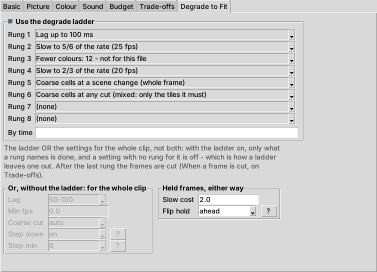
Use the degrade ladder, Rung 1 to Rung 8
Each rung is one way of giving. For each heavy stretch the encoder tries the first rung, then the first and second together, and so on, and takes the first combination that draws the stretch whole (or the least broken). If none does, the frames are cut as usual. The rungs on offer depend on the file:
- Lag up to N ms: let the picture run up to N milliseconds behind the sound and catch up after (only with a sound card's sound). 100 ms is hardly noticeable.
- Slow to 5/6 (2/3, 1/2...) of the rate: drop to a lower frame rate for that stretch only.
- Fewer colours: 12 or 8: a scene with its own palette steps down (16-colour files with scene palettes).
- Coarse cells at a scene change, or at any cut: draw the new picture as flat blocks first, the detail following in the next frames (16-colour VGA and Mode X). "mixed" uses blocks only where it must.
- Cut, no frame over N% broken: accept the cut once it is no worse than that.
Use the ladder when the report shows a clip "VISIBLY BROKEN" at scene changes and you would rather it slowed down or blurred for a moment than tore. Put the least noticeable rungs first: a small lag, then a slight slow-down, then coarser options.
By time
Gives one stretch of the clip a ladder of its own, for example 7.3-7.8=lag:50,coarseany:frame,slow:2/3 uses those rungs for a stretch starting between 7.3 and 7.8 seconds. Several are separated by ;. Use it for the one explosion that needs special treatment.
Or, without the ladder: Lag, Min fps, Coarse cut, Step down, Step min
The same ideas as fixed settings for the whole clip, used when the ladder is not ticked. Lag is a range in milliseconds (default 50-100: the encoder tries each allowance and keeps the one that cuts fewest frames). Min fps lets the rate drop as far as this where that draws the picture better (0 is off). Coarse cut, Step down and Step min are the coarse-cell and fewer-colours ideas. With the ladder ticked, these are off unless a rung names them.
Slow cost, Flip hold
Slow cost is how much the encoder dislikes a slower frame rate compared with a torn picture: higher keeps the full rate longer. Flip hold is how a held frame is drawn on a page-flipped file; leave it at ahead.
Flip build
For a page-flipped file, a way to bring a big scene change in whole. Normally the first frame of a new scene is drawn like any other frame: if it is too much for one frame, it is cut, or drawn as coarse cells, and fills in over the next few frames. With Flip build set to a number of frames, the encoder looks ahead to each scene change it would have to cut and holds the picture still on the old scene for a frame or two before it. During those frames it draws the new scene on the hidden page; then the page flips and the new scene appears complete, in its own colours. The frame after the flip copies the new picture onto the other page with the VGA's own copy hardware, so flipping carries on as normal.
It holds the fewest frames that bring the scene in whole, and never more than the number you give (3 to 8 is plenty; 0, the default, is off). A scene change that fits anyway, or that would need more frames than that, is left to the ladder or the cuts as usual. The report has a line naming each scene it built and how many frames it held.
It needs Flip and Flip own on (Trade-offs, Tearing: a 16-colour file on a Screen of its own, or Mode X), Flip hold at ahead, and Scene palettes on (the palettes are how the encoder knows where the scenes change). Otherwise the box is greyed and says which is missing.
Use it when a clip's scene changes are where it looks worst - a cut that takes many frames to fill in on a full-screen change - and the end of each scene is fairly still. Leave it off when the old scene is still moving as it ends: holding it for a frame or two is a small pause before the cut, which on fast footage can read as a stutter. Like the ladder, try it on the clip and compare. The preview shows a held frame as the screen does, still on the old picture.
Making a disk
Tick ...and make a disk of it before you click Encode, and choose the disk from the list. The image is written beside the .V88. The video goes onto it under a short 8.3 name (the first eight letters and digits of its name, then .V88), with Video Player beside it.
| Disk | Choose it when |
|---|---|
| a 360 KB, 720 KB, 1.2 MB or 1.44 MB floppy | You will put the disk in drive B: next to an os8088 system disk. Choose the size your drive takes: 360 KB for a PC or XT. Floppies are small for video: the sample clip made for a hard disk is about 1 MB for 12 seconds, so it needs the 1.44 MB size, while the floppy entry's version is about 270 KB and fits on a 360 KB disk. |
| a 20 MB hard disk: ST-225 on an ST11M (5150/XT) | An IBM PC or XT with an ST11M MFM controller, or 86Box set up the same way. The disk boots os8088 straight into a desktop with your video on it. |
| a 32 MB hard disk: ST-238R on an ST11R (XT) | An XT with an ST11R RLL controller. |
| a 32 MB hard disk: IDE (286 and up) | A 286 or later with an IDE disk, a CompactFlash or SD adapter, or 86Box. Also the easiest choice for an emulator. |
A hard disk image is a fixed-size .VHD: 86Box opens it directly, and a disk-imaging tool writes it onto a real disk or a CompactFlash card. It carries os8088 itself (from this folder's boot/), the hard disk and sound drivers, Video Player and the video.
You do not have to use this. os8088's disks are ordinary FAT disks, so you can copy a .V88 onto any os8088 floppy or hard disk with your computer's own tools. Give it a short name (eight characters or fewer before .V88).
Playing it on os8088
Double-click the .V88 file in a Disk window. Video Player opens with the poster picture showing.
| Key | What it does |
|---|---|
| Space, P or Enter | Play. In the window when it fits there, otherwise full screen. Space pauses and resumes. |
| F or Alt+Enter | Switch between the window and the full screen. |
| Esc | Stop. |
| Left, Right | Full screen: back or forward 5 seconds a press. |
| , and . | Full screen, while paused: one frame back or on. |
| R | Repeat on or off. |
| M or S | Sound off or on. |
If a file plays but the machine is slower than the one it was made for, the picture falls behind; make it again with the right profile.
Changing a finished file
Load .V88 (top right of the form) opens a video made before. You can scrub through it, and some things can be changed without encoding again:
- Title and Set title change the name Video Player shows.
- Drag the slider to a good moment and click Set as poster to make that keyframe the poster.
- Redo posters remakes the desktop preview pictures with the Desktop posters, size and clip settings now on the Basic tab.
When the file records the settings it was made with (files from this encoder do), loading it also sets every field in the form to those settings. Choose the original video as Input, change what you want, and encode again. This is the easiest way to make a second version for a different machine.
Recipes
Worked examples for common situations. Each one starts from a Made for entry and lists only what to change after choosing it.
A music video for an IBM PC with a Sound Blaster and an MFM hard disk
- Made for
- IBM 5150/XT, CGA - black and white (or Hercules - black and white)
- Then
- Nothing, to start. Encode, and read the report's "cut" line.
- If many frames are cut
- On Trade-offs raise Stable to 10 or 12 (music videos are often noisy). Then lower Fps to 20. Then try the
cga-smallor a smaller Box. - Disk
- a 20 MB hard disk: ST-225 on an ST11M
Why: black and white at 640 x 200 is the sharpest picture an XT can stream, and its stable dither keeps quiet areas free. Cuts are where music videos struggle; noise reduction and a slightly lower rate leave more budget for each cut.
The same video for an XT with no sound card
- Made for
- IBM 5150/XT, PC speaker - Hercules. For a CGA, set Preset to
cga-spkafterwards. - Sound tab
- Nothing has to change. To hear the result first, choose a file for Spk preview and listen to it after the encode. If quiet passages vanish, set Spk style to
lifted.
Why: the speaker needs most of the processor, so this entry uses a 360 x 160 picture at 23 frames a second. A bigger picture would leave the machine no time to draw it.
A clip that has to play from a floppy
- Made for
- IBM 5150/XT, a floppy - small and slow
- Consider
- Sound tab: Audio
adpcm4ornoneif the picture is too rough. Basic tab: Fps 15. - Disk
- a 360 KB floppy
Why: a floppy reads about 15 KB a second, an eighth of a hard disk. Every byte the sound does not use goes to the picture. For a clip of a few seconds, ticking Resident instead loads it whole and plays it at hard-disk quality.
A spinning logo on the desktop
- Made for
- Live on a CGA (Hercules, VGA) desktop
- Basic tab
- Loop from 0, tick Repeat. Set End to the length of one turn.
- Sound tab
- Audio
noneunless it needs sound; it keeps the clip small.
Why: Live clips play while the machine stays usable, and a seamless loop with Repeat on plays for ever with no pause at the join.
The best colour picture a 286 with VGA can play
- Made for
- 286, VGA - Mode X, 256 colours, square pixels (or 256 colours, full screen)
- Consider
- Budget tab: Bank
autoif the machine has a few MB of extended memory. Trade-offs: Blockson, and Detail1x1if the report shows few cut frames. - Disk
- a 32 MB hard disk: IDE
Why: 256 colours from the clip's own palette is the most faithful picture Video Player draws. The default Detail of 2x1 halves the work; full detail is for a calm clip or a faster machine. The bank lets a long stretch of action spend memory instead of cutting frames.
A colour video that plays in a window on a VGA desktop
- Made for
- 286, VGA - 16 colours in the window
- Colour tab
- Palette
colour16and tick Scene palettes, if the standard sixteen look muddy. - Degrade to Fit
- Tick Use the degrade ladder if scene changes look torn.
Why: 16 colours is the desktop's own mode, so the video can share the screen. A palette per scene puts the sixteen where each scene needs them.
One file for an XT that looks better on a 286
- Made for
- IBM 5150/XT, Hercules (or CGA) - black and white
- Budget tab
- Layer profile
286-fast
Why: the XT plays the base stream as it would any file. A 286 reads the layer too, and fills in what the base had to leave out.
Text-mode art that plays on anything
- Made for
- Any PC - text mode, 16 colours (or the black-and-white one for Hercules and MDA)
- Picture tab
- Text glyphs
asciiordotsfor the art look. Raise Text busy if it looks like crawling letters.
Why: a whole text screen is only 4,000 bytes, so it plays at full frame rate even from a slow disk, and every PC can show it.
As many videos as possible on one disk
- Basic tab
- Aim
size; Keysecs 5. - Trade-offs
- Raise Stable; raise Worth to 2 for smaller still.
- Sound tab
adpcm4, or a lower Rate.
Why: Aim size drops the changes that matter least rather than the ones that happen to come last, which looks better than simply lowering the disk budget.
When something looks wrong
| What you see | Try |
|---|---|
| Scene changes fill in slowly or look torn | Normal in moderation. If it bothers you: lower Fps, use a smaller Box, raise Stable, or use the degrade ladder. On Mode X or full-screen 16 colours, Page ahead builds cuts in advance. |
| Fast pans leave scattered half-updated rows | Trade-offs: Cut tear. Or a smaller picture. |
| Flat areas shimmer or crawl with dots | Raise Stable (Trade-offs) and Clip (Picture). |
| Dark scenes are solid black blobs | Raise Gamma to 1.3 to 1.6; lower Clip. |
| Everything looks washed out | Lower Gamma; check Levels is auto. |
| Four colours look wrong | Set Cga palette, Cga bright and especially Cga bg by hand. Some clips do not suit four colours at all; try 16 colours at 160 x 100 or black and white. |
| Composite colours look like stripes | The monitor is RGB, not composite. Choose a non-composite entry. |
| Video falls behind the sound on the real machine | The profile is too fast for it. Choose a slower one, or lower Avg and Peak on the Budget tab. An XT-IDE machine wants 5150-xtide. |
| The player says Low memory | Free memory on the machine (fewer drivers), or encode with a lower Memory on the Budget tab. |
| Sound pauses in busy moments | Sound tab: Buffer sound ahead on. |
| Speaker sound is too quiet or lost in the whine | Spk style lifted, raise Spk drive, raise Volume; check with Spk preview. |
| The player refuses the file | An older Video Player. Use the VIDEO.O88 from this folder (every disk the encoder makes has it), or avoid Blocks, Frame cap above 32 and Spk pulses 2. |
| Encoding takes too long | Encode a short stretch with Start and End while experimenting. Comp quick, Adpcm greedy and Page ahead off speed up test encodes. Aim quality and layers are the slowest settings. |
| The picture is not centred / has the wrong shape | Picture tab, Fit. The encoder deliberately draws no black bars. |
The command line
Everything in the window is also available as os88venc.py. The window's settings become exactly these options, so a command line is a good way to batch-encode many files the same way:
python3 os88venc.py clip.mp4 CLIP.V88 --preset herc
python3 os88venc.py clip.mp4 CLIP.V88 --preset cga4 --cga-palette 1 --cga-bright 1
python3 os88venc.py clip.mp4 CLIP.V88 --preset modex --profile 286-fast --blocks on
python3 os88venc.py clip.mp4 CLIP.V88 --preset cga-small --profile floppy --audio adpcm4
python3 os88venc.py song.mp3 SONG.WAV # sound alone, for the PC speakerpython3 os88venc.py --profiles lists the presets and profiles; python3 os88venc.py --help lists every option with the same help text as the tooltips. Option names match the field names in the window: Vga4 stable is --vga4-stable, and so on.
Words used in this guide
| Budget | What the target machine can do while playing: bytes a second from its disk, and time to draw. Set by the profile. |
| Cut frame | A frame that did not fit its budget, so only its most important changes were drawn. The rest follows in the next frames. |
| Dither | Mixing the few colours a screen has, as dots, to suggest the colours it does not. |
| Keyframe | A whole picture stored in the file: a place to start playing from. |
| Layer | A second stream in the file, read only by a faster machine to improve the picture. |
| Live | A short clip that plays on the desktop while you keep working. |
| Mode X | A VGA mode with 256 colours, square pixels and room for more than one page. |
| Page, flip | A second screen's worth of video memory. Drawing on a hidden page and then showing it ("flipping") hides the drawing. |
| Pixel format | How each pixel is stored: black and white, 4, 16 or 256 colours, composite, or text. |
| Poster | The still picture Video Player shows before a play. |
| Preset | A named screen layout and picture size. |
| Profile | A named machine: disk speed, processor speed and default sound. |
| Resident | A file read whole into memory before it plays. |
| Scene | A stretch of video between two cuts. Several settings act scene by scene. |
| Tear | A screen showing part of one frame and part of the next. |
| XMS | Extended memory, above 1 MB, on a 286 or better. |
The sample clip in this guide is made from three original pictures in os8088's own sample gallery (the PiXEL viewer's VACATION.JPG, FLOWER.JPG and ROOM.JPG), with a pan and zoom added and a short generated tune.